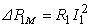
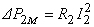

7.2.2.1. Параметры схемы замещения реального трансформатора
Каждая из обмоток трансформатора имеет активное сопротивление (R1 или R2), поэтому при протекании через них токов имеют место небольшие активные потери мощности:
 и .
Индуктируемые в обмотках соответствующими потоками рассеяния ЭДС и пропорциональны токам, т. к. магнитные потоки рассеяния замыкаются в основном по воздуху (в дальнейшем индекс L в обозначениях индуктивных сопротивлений рассеяния Х1L и X2L будем опускать и записывать ЭДС в виде
E1P = -jX1I1 и E2P = -jX2I2). В первичной обмотке также индуктируется основным магнитным потоком Ф ЭДС самоиндукции Е1L = -jXсmI0, во вторичной - ЭДС взаимной индукции Е2M = -jXMI0, а в ферромагнитном сердечнике имеют место активные потери мощности от вихревых токов и явления гистерезиса, которые учитывают, добавив в схему замещения трансформатора элемент с активным сопротивлением Rсm.